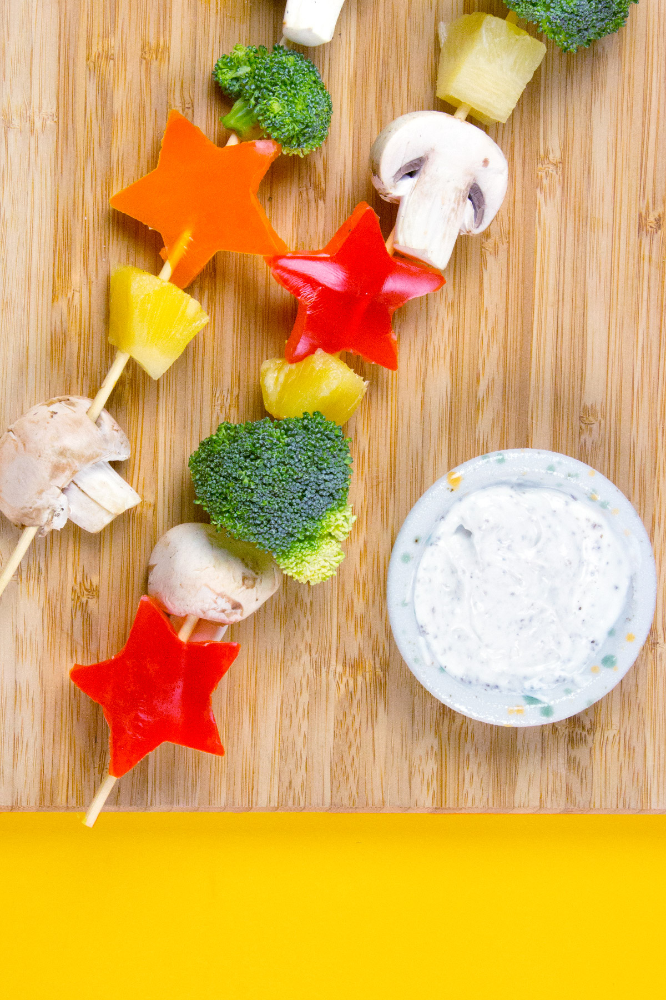

Sponge-Kabob Recipe

Cook up some snack skewers with a Bikini Bottom flair
Getting your child to eat their vegetables just got a little easier with this Bikini Bottom-inspired snack skewer.
The perfect combination of healthy and fun, this snack will add some much needed under-the-sea delight to snack time.
Your kid will have so much fun eating Patrick-shaped peppers, they won't even realize they're eating vegetables!
Ingredients
- Red pepper
- Orange pepper
- Mushrooms
- Broccoli
- Pineapple chunks
- Your favorite Ranch dressing
How to Make
-
Cut the peppers into stars (representing Patrick). Slice the mushrooms width-wise. Trim the Broccoli florets down.
-
Thread the vegetables and pineapple chunks onto skewers. Serve with Ranch dipping sauce and enjoy!